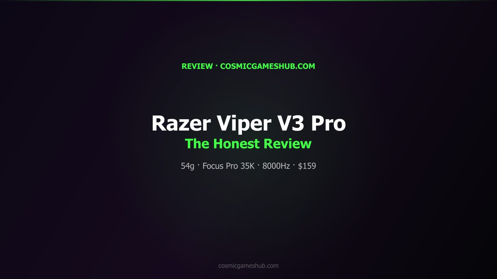
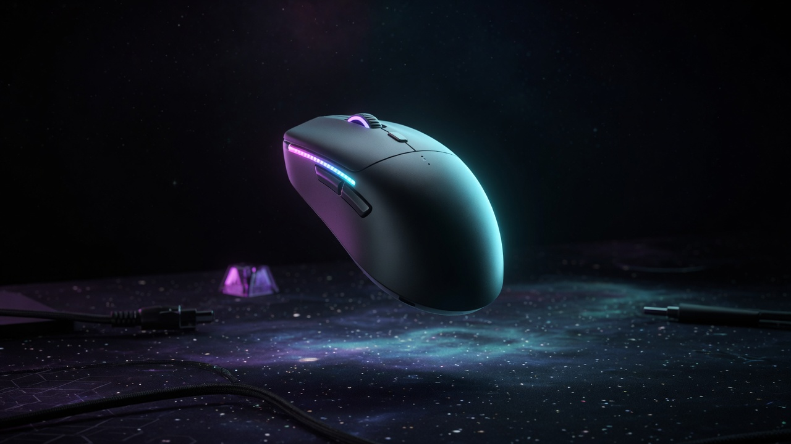

Best Wireless Gaming Mice 2026
Updated August 2026. Wireless is the category now. The old 99g G305 is retired from this list. G305 X Superlight (~59g, ~$80) is the value door. Viper V3 Pro is the competitive default. Superlight 2 is still CS2. SUPERSTRIKE and Viper V4 Pro are the new-ceiling options. Specs and public share, not a lab.
| Pick | Mouse | Weight | ~Price |
|---|---|---|---|
| 🎯 Competitive | Viper V3 Pro | 54g | $119 |
| 👑 CS2 default | Superlight 2 | 60g | $114–$159 |
| 💰 Value | G305 X Superlight | 59g | $80 |
| ⚡ New click | SUPERSTRIKE | 61g | $180 |
| 🆕 Ceiling | Viper V4 Pro | 49g | $160 |
Viper V3 Pro

Fortnite's most-used mouse as of August 2026 public tracking, still top-two in VALORANT after V4 Pro launched. Review. vs Superlight 2.
🛒 AmazonSuperlight 2

Still CS2's most-used mouse. DEX if you want ergo (DEX review). SUPERSTRIKE if you want analog clicks.
🛒 AmazonG305 X Superlight

June 2026 refresh of the egg. Rechargeable, tri-mode, optional 8K dongle sold separately. Reviews like the weight drop, not always the skates.
🛒 AmazonSUPERSTRIKE

Same Superlight-family shell with electromagnetic HITS instead of LIGHTFORCE. Rapid-trigger-style click travel. Real CS2 share. vs Superlight 2.
🛒 AmazonViper V4 Pro

VALORANT's most-used mouse in August 2026 public tracking. Lighter, longer battery, Gen-4 opticals. Buy if you want the current Viper ceiling. Buy V3 Pro if you want the proven shape cheaper.
🛒 Amazon